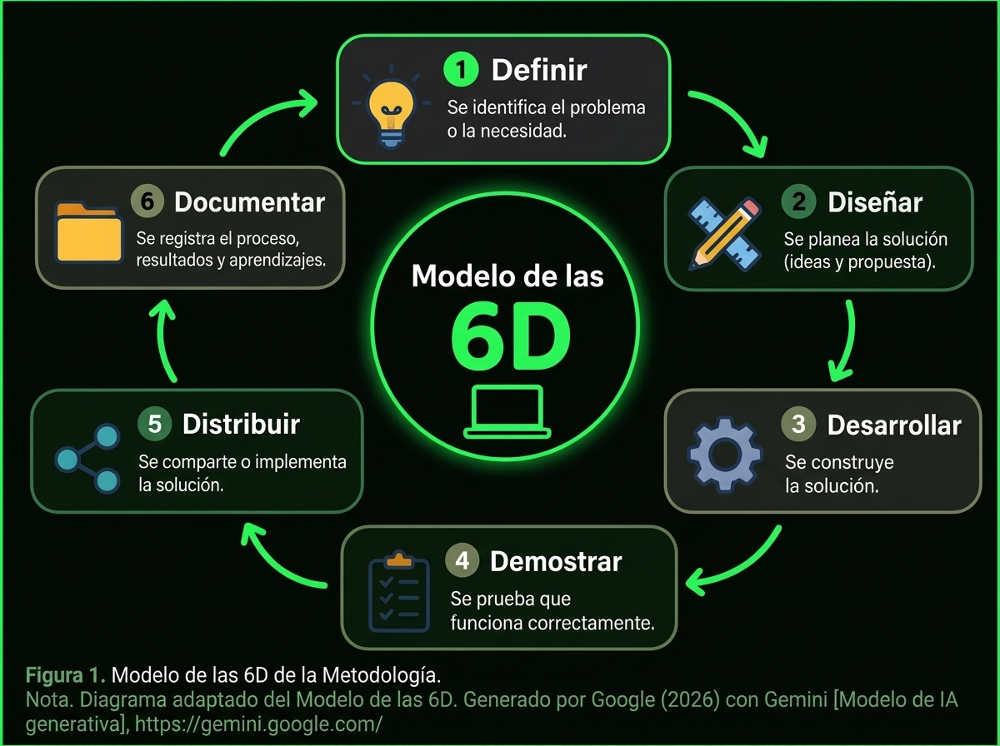

Programa de Cálculo Geométrico-Vectorial y Evaluador de Impuestos Tecnológicos mediante Operaciones Lógicas (SimuVector-TIC)
Objetivo general
Desarrollar un software de consola básico en lenguaje Java, articulado con un reporte de investigación documental, mediante la aplicación de estructuras de control selectivas, operaciones aritmético-lógicas y algoritmos geométricos, para simular
la magnitud de un vector en el plano 2D y la evaluación fiscal en la adquisición de equipos informáticos, fortaleciendo el pensamiento lógico-matemático y las competencias comunicativas de primer semestre en el ITSOEH.
Problemática
En el desarrollo de soluciones dentro de las Tecnologías de la Información y Comunicaciones (TIC), es fundamental automatizar procesos matemáticos y reglas de negocio mediante lógica computacional.
Este proyecto aborda la necesidad de integrar en una sola herramienta de consola dos problemáticas prácticas de la ingeniería:
-
Módulo 1 — Geométrico/Vectorial:
En el procesamiento de gráficos por computadora y modelado de redes, los desplazamientos en pantalla o la distancia física entre dos nodos se representan en un plano cartesiano 2D. Se requiere calcular de forma precisa la variación de posición (incrementos Δx = x₂ - x₁ y Δy = y₂ - y₁) y la magnitud del vector resultante
(distancia euclidiana d = √[(Δx)² + (Δy)²]) a partir de dos puntos dados P₁(x₁, y₁) y P₂(x₂, y₂)
-
Módulo 2 — Financiero-Lógico:
En el comercio electrónico de equipos de cómputo, el costo final depende de políticas fiscales y esquemas de subsidio educativo basados en la Ley del IVA. Se requiere automatizar el cálculo del impuesto aplicable evaluando dos proposiciones lógicas: si el comprador es estudiante acreditado (p) y si el equipo pertenece al
catálogo educativo (q). Según las reglas de negocio, se asigna exención total del 0% si se cumplen ambas condiciones (p ∧ q), tasa reducida del 8% si se cumple exactamente una (p ⊕ q), o tasa general del 16% si no se cumple ninguna (¬p ∧ ¬q).
Metodología
Enfoque metodológico: Modelo de las 6 D's
Para el análisis, diseño y desarrollo de SimuVector-TIC se aplicó la Metodología de las 6 D's, un enfoque sistemático para la resolución de problemas computacionales dividido en seis etapas secuenciales con retroalimentación iterativa.
- Etapa 1 | Descripción del problema: Se identificaron y delimitaron ambos requerimientos (cálculo geométrico-vectorial y evaluación fiscal), estableciendo los alcances y las restricciones técnicas de primer semestre.
- Etapa 2 | Definición de la solución: Se definieron los datos de entrada necesarios (coordenadas P₁ y P₂; costo, estatus de estudiante y tipo de equipo), las fórmulas matemáticas, las tablas de verdad lógicas y las salidas esperadas en consola mediante un menú interactivo.
- Etapa 3 | Diseño de la solución: Se modeló la lógica del sistema antes de programar mediante diagramas de flujo y pseudocódigo en PSeInt, además de planificar el cronograma en GanttProject y definir el diccionario de variables.
- Etapa 4 | Desarrollo de la solución: Se tradujo el diseño a código fuente en lenguaje Java utilizando Apache NetBeans, estructurando condicionales if-else, validaciones de entrada y comentarios internos explicativos.
- Etapa 5 | Depuración y pruebas: Se ejecutaron pruebas unitarias, de integración y diez casos de prueba manuales por módulo (incluyendo valores habituales, límites y casos especiales) para verificar la precisión matemática y lógica, corrigiendo errores detectados.
- Etapa 6 | Documentación: Se integró el reporte técnico bajo normas APA, los manuales de usuario y programa, la documentación individual de cada problema en formato Markdown y la presentación ejecutiva del proyecto.

Herramientas tecnológicas y flujo de colaboración
El desarrollo técnico y documental se apoyó en las siguientes herramientas:
- PSeInt: modelado algorítmico.
- Apache NetBeans y Java: codificación y compilación.
- GanttProject: gestión de tiempos.
- Microsoft Word y Markdown: documentación.
Para la colaboración del equipo (5 integrantes de 1°A), se implementó un flujo de control de versiones en GitHub (repositorio proyecto-1a).
Las responsabilidades se dividieron en tareas independientes mediante ramas específicas (feature branches).
Cada integrante desarrolla su entregable en su rama asignada y solicita su integración a la rama principal (master/main) mediante un Pull Request (PR), el cual es revisado y aprobado por otro compañero antes de fusionarse, garantizando trazabilidad y control de calidad en el código y la web.
Análisis de resultados
Como parte de la etapa final de desarrollo del proyecto en la fase No. 05, se realizaron los testeos correspondientes para validar el funcionamiento del programa a travez
de pruebas de escritorio en cada módulo. En las tablas "casos_prueba" se muestran las corridas realizadas en múltiples escenarios.
Tablas de pruebas de escritorio
- Tabla PRUEBAS_PROBLEMA_1
- Tabla PRUEBAS_PROBLEMA_2
El programa fue puesto a prueba con estudiantes y docentes de la institución y se realizaron los ajustes necesarios a partir de las sugerencias y errores encontrados, entre ellos:
- Validación de datos: Evitar que el usuario ingrese caractéres, letras o símbolos que puedan confundir al programa o evitar su correcto funcionamiento.
- Rango de datos: Se establecieron rangos de datos mínimos y máximos que el programa pueda manejar para sean coherentes de acuerdo a cada problema y se evite buffer overflow (desbordamiento de datos).
- Interfaz cómoda: El programa se mudó de una vizualización en consola a una interfaz hecha con herramientas en el entorno de desarrollo de NetBeans.
- Menú interactivo: Se mejoró el menú de las operaciones a ejecutar para permitir al usuario elegir entre los 2 módulos o salir del programa.
- Simplificación de los resultados mostrados: En los apartados correspondientes se simplificaron los valores de los resultados mostrados para redondear a 2 decimales.
Conclusiones
El proyecto SimuVector-TIC cumplió su objetivo de integrar, en una sola herramienta desarrollada en Java, dos problemas propios de la ingeniería en TIC: el cálculo de la magnitud
de un vector en el plano 2D y la evaluación del IVA en la compra de equipos de cómputo mediante lógica proposicional. La metodología de las 6 D’s permitió avanzar de forma ordenada,
desde la descripción del problema hasta la documentación final, y apoyó el uso de estructuras selectivas, operaciones aritmético-lógicas y algoritmos geométricos, lo que fortaleció
el pensamiento lógico-matemático del equipo.
Las pruebas de escritorio y la retroalimentación de estudiantes y docentes mejoraron el programa de forma notable: se añadieron validación de datos, rangos permitidos,
un menú interactivo, redondeo a dos decimales y una interfaz gráfica en NetBeans en lugar de la consola. El flujo de trabajo en GitHub, con ramas individuales y Pull Requests
revisados por otro compañero, dio trazabilidad al trabajo y desarrolló competencias de colaboración y comunicación.
En conjunto, el proyecto no solo produjo un software funcional, sino que mostró cómo automatizar procesos matemáticos y reglas de negocio con lógica computacional,
una base sólida para los siguientes semestres de la carrera.
Programa de Cálculo Geométrico-Vectorial y Evaluador de Impuestos Tecnológicos mediante Operaciones Lógicas (SimuVector-TIC)
Integrantes
 |
|
|
|
|
| Eduardo Cornejo Álvarez |
Monserrat Mendoza Martínez |
Daniela Vázquez Moctezuma |
Ian Maldonado Aguilar |
Ángel de Jesús Contreras Jiménez |
| Matrícula: 260110218 |
Matrícula: 260110248 |
Matrícula: 260110402 |
Matrícula: 260110863 |
Matrícula: 260110489 |
| 260110218@itsoeh.edu.mx |
260110248@itsoeh.edu.mx |
260110402@itsoeh.edu.mx |
260110863@itsoeh.edu.mx |
260110489@itsoeh.edu.mx |
| Página personal |
Página personal |
Página personal |
Página personal |
Página personal |